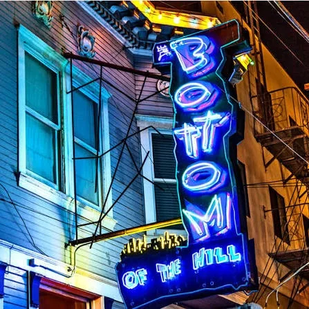

Tool 01 / Color and composition
Color Lab
Choose a branch, tonal theme, and one of four canonical compositions. Compare real sticker artwork with mark treatments and editorial applications, then copy the active specifications.
Launch Color Lab v5An identity system for cultural work worth encountering, sustaining, and returning to.
This is not Repertory’s public-facing site. It is the working environment behind it: a place for designers to understand the logic, study its applications, and leave with the right assets.


Repertory provides the frame.
“The frame matters because of what it allows us to see.”
The value of Repertory is not proven by making every subject look alike. Our continuity lives in judgment, structure, typography, and disciplined gestures of attribution. The featured work must remain itself.
Read the complete manifestoBranch colors locate the institutional relationship. They do not dictate the palette, personality, or authorship of the featured venture.
Cross-disciplinary programs, creative thinking, and the umbrella identity.
Music, film, books, publishing, and the circulation of work.
Restaurants, venues, and the everyday spaces of culture.
Events, performances, encounters, and shared experience.
Tools are not an invitation to invent a new identity. They make established choices visible, reproducible, and easy to carry into other work.
Choose a branch, tonal theme, and one of four canonical compositions. Compare real sticker artwork with mark treatments and editorial applications, then copy the active specifications.
Launch Color Lab v5
Explore approved filled, stroked, gridded, and lined configurations, including disciplined single-axis extensions. Match an image ratio and export transparent vector and raster forms.
Launch Gnomon Builder v5